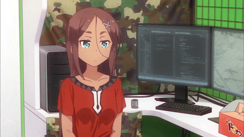

₍ᐢᐢ₎ Gênero: Comédia
Episódios: 24
Ano de lançamento: 2016
Autor: Shotaro Tokuno ₍ᐢᐢ₎
Depois de se formar no colégio, Suzukaze Aoba entra na Eagle Jump,
uma empresa de jogos que desenvolveu Fairies Story,
o jogo pelo qual ela é obcecada desde pequena.
Em seu primeiro dia como um membro produtivo da sociedade,
Aoba se dirige para o trabalho balançando em um
trem lotado na hora do rush da manhã.
Ela consegue chegar ao prédio de escritórios mas hesita em entrar,
sem saber se dar esse último passo é realmente uma boa decisão.

É quando um membro sênior da equipe, Toyama Rin,
aparece no trabalho e conduz Aoba
com segurança para os escritórios da Eagle Jump.
Em seu departamento, há pessoas que compartilham a mesma paixão por jogos.
₍ᐢᐢ₎ Yun Iijima, Cuja especialidade é projetar monstros ₍ᐢᐢ₎
₍ᐢᐢ₎ Hifumi Takimoto, Que prefere se comunicar por mensagens instantâneas ₍ᐢᐢ₎
₍ᐢᐢ₎ Hajime Shinoda, um membro da equipe de animação com
uma coleção impressionante de estatuetas ₍ᐢᐢ₎
₍ᐢᐢ₎ Rin Tooyama, o diretor de arte organizado ₍ᐢᐢ₎
₍ᐢᐢ₎ Shizuku Hazuki: o diretor de jogos que leva seu gato para o trabalho₍ᐢᐢ₎
₍ᐢᐢ₎ Umiko Ahagon, a programadora chefe de temperamento explosivo ₍ᐢᐢ₎
Nesse vídeo você vai poder descobrir mais sobre esse anime
e para você que gosta de games aproveita!
Você pode assistir no Chunchyroll. ദ്ദി（• ˕ •マ.ᐟ